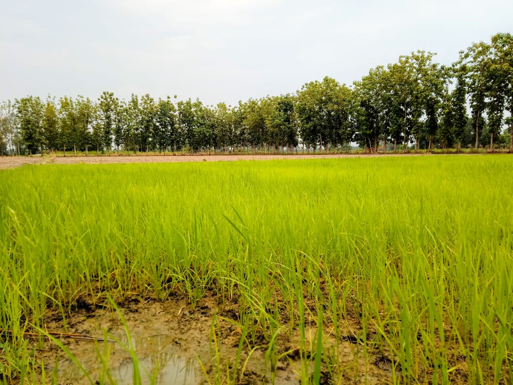
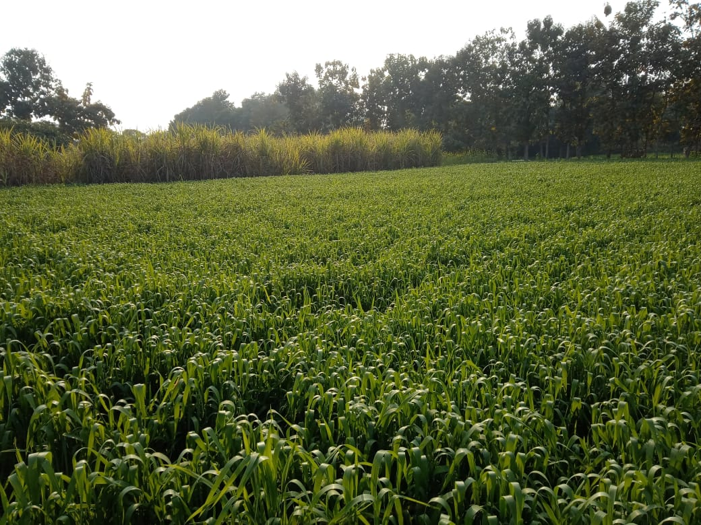

Farming in Pura Nazir is the heart of our village's economy. The fertile lands and favorable weather make agriculture the main occupation for most villagers...
Rice is the primary crop grown during the monsoon season, feeding the village and beyond.
Wheat is harvested during the Rabi season, a crucial crop for the region’s food supply.
Sugarcane thrives in the region’s soil, playing a significant role in the local economy.

Maize is another important crop grown in the village, widely consumed in various forms.
Animal husbandry is an integral part of agriculture here. It provides dairy products, meat, and eggs, which are sold locally.
Pura Nazir combines traditional farming techniques with modern machinery to increase productivity. Tractors, plows, and harvesters are commonly used in the fields.